Welcome to the exciting world of Gemini and Flutter Web!
NOTE: THIS IS NOT A BEGINNER CODELAB
(If you're looking for more beginner content, please visit some of my other codelabs here). If you're up for the challenge, then proceed.
This is a codelab series focused on Flutter and Gemini, in which you'll learn the following:
- Building Layouts in Flutter
- State Management using Riverpod
- Gemini Integration: how to supercharge your Flutter Web Apps using the power of AI
The bottom image is a screenshot of what we'll be building during this session, so follow along:
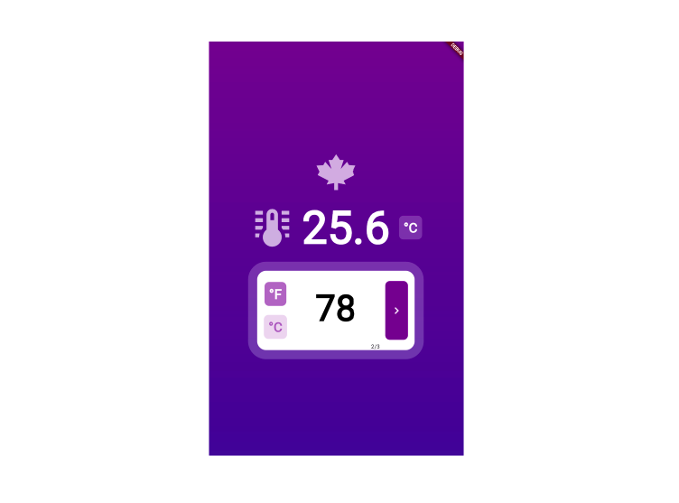
Prerequisites:
- Install the Flutter SDK
- Your preferred IDE (preferably Visual Studio Code)
- Install the Google AI Dart SDK (plus other dependencies)
- Get a Gemini API Key using Google AI Studio
Flutter is an open-source UI Toolkit supported by Google for building beautiful, natively-compiled user interfaces in a multi-platform fashion, using Dart, another open-source programming language supported by Google, as its core language.
Flutter for Web provides the lowest barrier to entry when it comes to becoming a profilic Flutter developer. Most of the concepts learned in Flutter can be applied in a multi-platform scenario, and web is not an exception, so join us in building compelling web apps by going through the codelabs in this series.
Let's perform the following steps:
- Download the Flutter SDK according to your corresponding machine architecture and set it up to develop for the web. Proceed with the installation.
NOTE: make sure you can run the command flutter doctor at a minimum before proceeding to the next step, as this is proof that the Flutter SDK is set up correctly in your environment.
Using your preferred IDE (in our case, Visual Studio Code), we'll open up a command line and run the following command in order to create the base Flutter project:
flutter create gemini_temp_app
This will create a Flutter project called gemini_temp_app with some scaffolding and boilerplate code in place. We'll get rid of most of it later down this session.
After project creation, make sure to cd into the project or re-open Visual Studio Code into the folder created for the project (gemini_temp_app) before you continue.
- We'll use Chrome as our device to test so once the Flutter SDK is installed, take it for a first spin by running the following command:
flutter run -d chrome
NOTE: there is no hot-reload unfortunately while developing for the web, only hot restart.
After loading it for the first time, make sure you can see the sample Flutter Web project, as such:
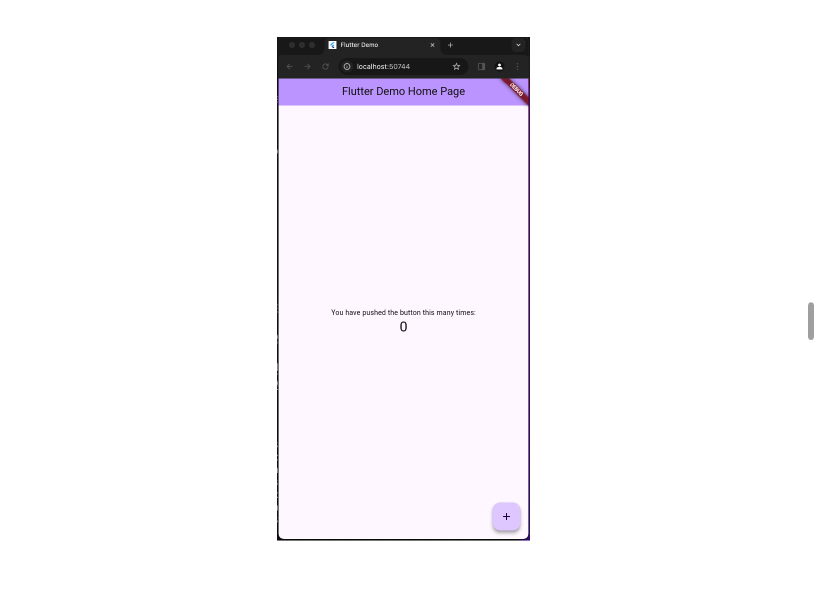
Install Dependencies
We'll be installing the following dependencies:
- For state manaagemnet, install flutter_riverpod
- For the Gemini API integration, we'll use google_generative_ai
- For icons, we'll use community_material_icon
You can install them by running the following command in the command line:
flutter pub add flutter_riverpod google_generative_ai community_material_icon
With the dependencies in place and the project up and running, let's proceed!
Gemini is a family of multimodal large language models developed by Google DeepMind, serving as the successor to LaMDA and PaLM 2. Comprising Gemini Ultra, Gemini Pro, and Gemini Nano, it was announced on December 6, 2023, positioned as a competitor to OpenAI's GPT-4.
In order to talk to Gemini, we'll use the Gemini API, and for that we'll require an API Key, which we'll supply to Flutter through the Google AI Dark SDK.
Go to Google AI Studio, and sign in with a GMail account.

Since we'll be developing in our own environment, make sure to select the Develop in your own environment option - click on Get API key:
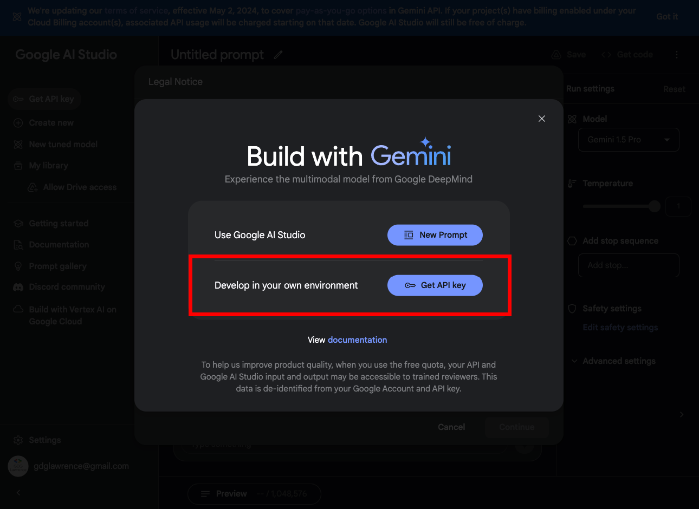
Consent to all applicable options - click Continue:
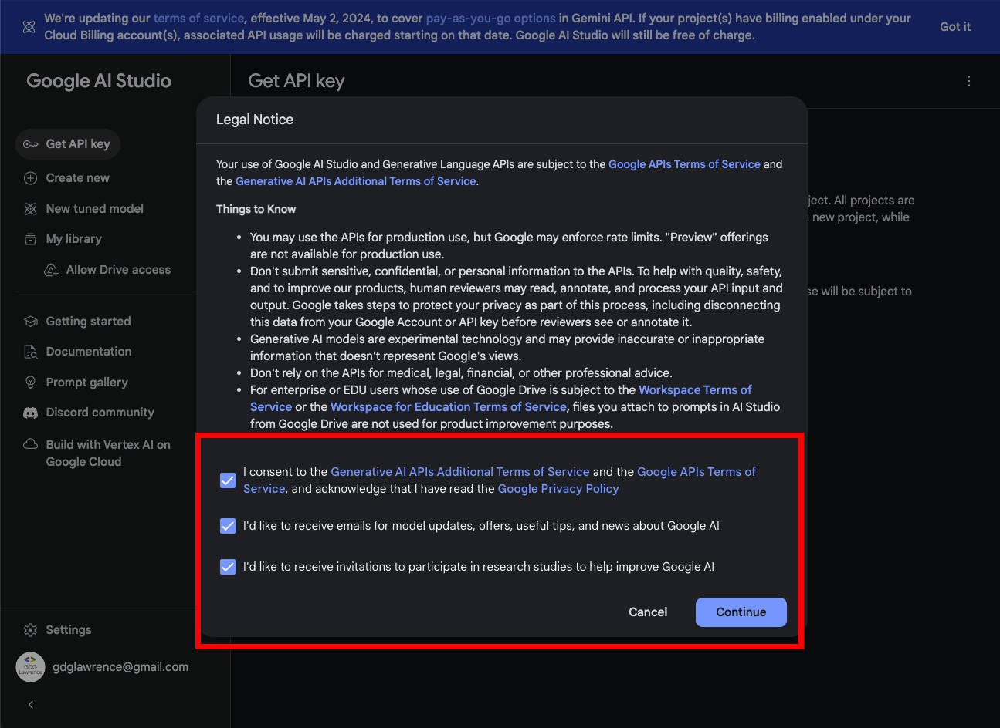
API Keys are associated with a Google Cloud project. Click on Create API Key, then select whether to associate it with an existing project, or create a new project.
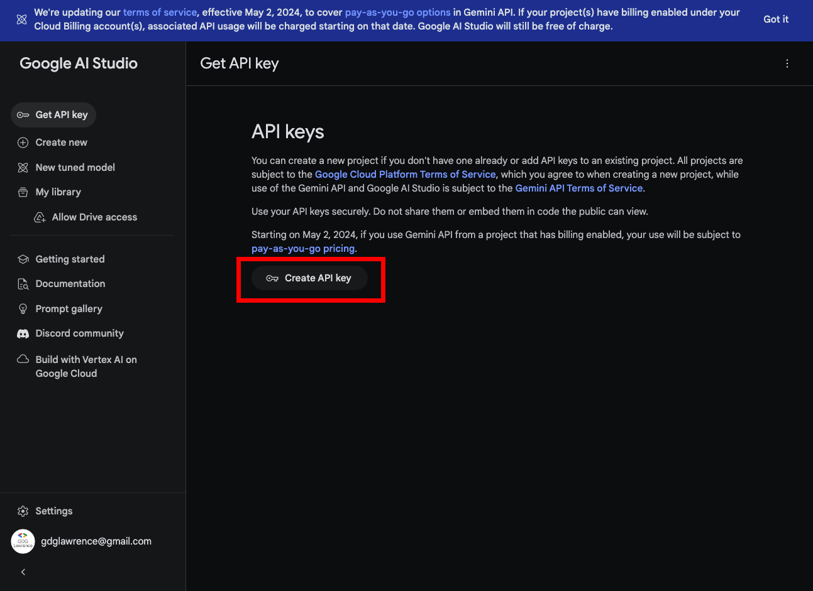
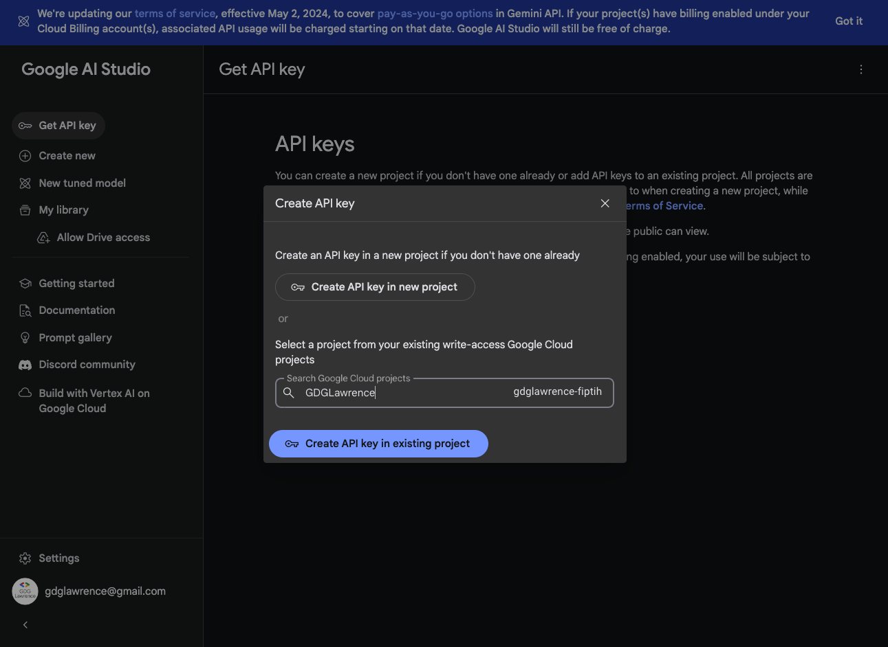
Once the key is generated, save it locally somewhere - we'll be needing this later and offer ways to secure it.
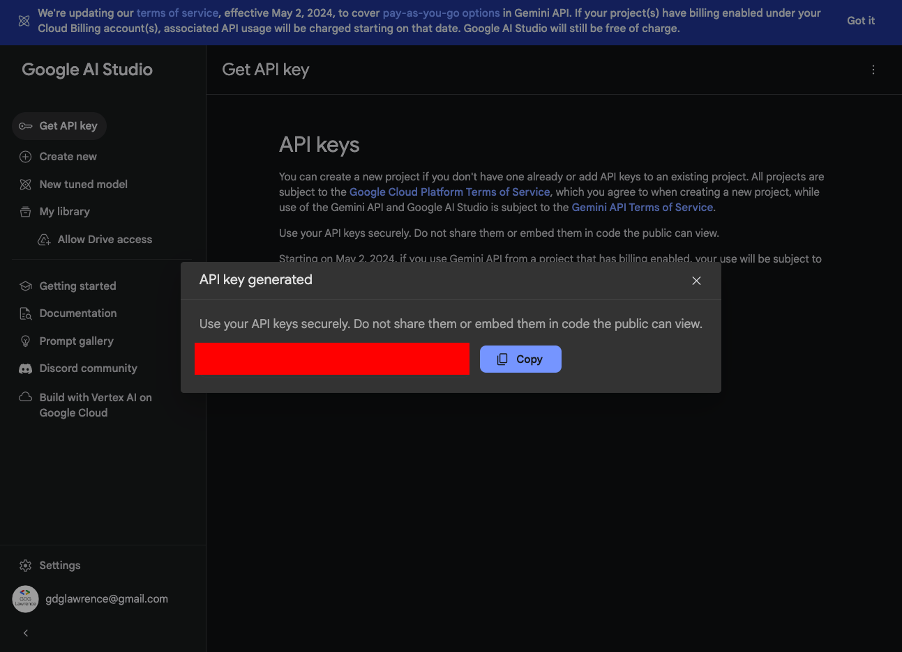
With our API Key in hand, let's proceed to build the app, shall we?
The bottom is a brief schematics of what we'll be tackling from the widget composition perspective:
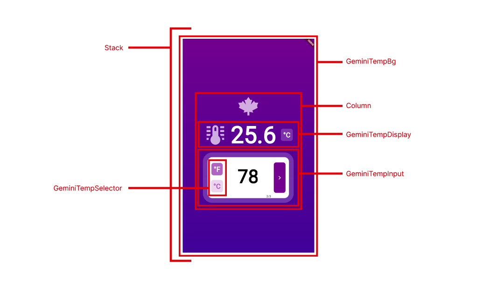
As you know, everything in Flutter is a widget, and Flutter gives you full control of what can be considered a widget and how to paint it on the screen - you own every pixel! This is where Flutter shines.
Add the root app widget
Let's start by setting up the initial plumbing of the application. We'll start by creating the root app widget.
Navigate to your project, and start by removing everything from your main.dart file.
For simplicity and for the sake of this codelab, we'll concentrate on only the main.dart file so all widgets will be added here, but as a best practice each widget should live within its own file - food for thought!
NOTE: as we assemble the app, you may get temporary errors - do not fret! This is part of the building progress and things should fall into place as we make progress. Keep pushing through!
Proceed to add all dependencies required by this project, and the root app widget, named GeminiTempApp:
// dependencies
import 'dart:convert';
import 'package:community_material_icon/community_material_icon.dart';
import 'package:flutter/material.dart';
import 'package:flutter/services.dart';
import 'package:flutter_riverpod/flutter_riverpod.dart';
import 'package:google_generative_ai/google_generative_ai.dart';
// root widget
void main() {
runApp(const ProviderScope(child: GeminiTempApp()));
}
Notice how the GeminiTempApp root widget is wrapped inside a ProviderScope - this is provided by Riverpod and it is what will facilitate creating a scope around our app so we can implement a state management solution using Riverpod.
Add the main GeminiTempMain widget
Proceed down the line and create the scaffolding for the GeminiTempApp root widget, which should return as a child a MaterialApp widget (which wraps all Material styling) and the core main widget that encapsulates all functionality, which will be called GeminiTempMain, as such:
// rest of the code omitted for brevity
class GeminiTempApp extends StatelessWidget {
const GeminiTempApp({super.key});
@override
Widget build(BuildContext context) {
return const MaterialApp(
home: GeminiTempMain(),
);
}
}
The GeminiTempMain will encapsulate the main functionality for this app, and will contain the following:
- A root Scaffold widget that will wrap all child widgets
- As a direct child of the Scaffold, a Stack widget, since we want to lay down our widgets in a stacked fashion.
- This widget will inherit from ConsumerWidget since we'll use it to inject state management dependencies from Riverpod.
Add the following code below the existing one:
// rest of the code omitted
class GeminiTempMain extends ConsumerWidget {
const GeminiTempMain({super.key});
@override
Widget build(BuildContext context, WidgetRef ref) {
return Scaffold(
body: Stack(
children: [
// REST OF THE CODE WILL RESIDE HERE
]
)
);
}
}
FROM THIS POINT ON, WE'LL FOCUS ON THE CHILD WIDGETS INSIDE THE STACK
We want the widget that will represent the gradient background as a separate widget. This will be a simple Container with some styling using a BoxDecoration with a LinearGradient applied to it.
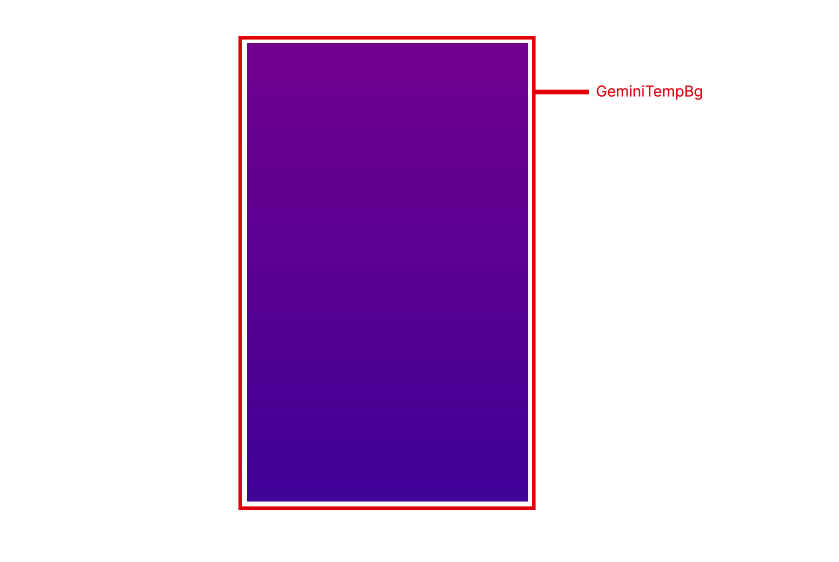
Create the placeholder widget as the first widget inside the Stack:
/// inside the Stack widget, add this line:
const GeminiTempBg(),
Now, let's proceed to create the actual GeminiTempBg widget:
class GeminiTempBg extends StatelessWidget {
const GeminiTempBg({super.key});
@override
Widget build(BuildContext context) {
return Container(
decoration: const BoxDecoration(
gradient: LinearGradient(
colors: [
Colors.purple,
Colors.deepPurple,
],
begin: Alignment.topCenter,
end: Alignment.bottomCenter
)
),
);
}
}
Take it for a spin by re-running the app (hitting ‘R' to trigger a hot restart, or a full restart with flutter run -d chrome as before).
Confirm that you can see the gradient widget in your browser - proof that things are working as expected!.
Proceed to the next step!
Let's make this app a bit cheerful by adding some icons, shall we! Continue assembling the layout of this app by going back to our Stack widget inside the GeminiTempMain widget, and right under the GeminiTempBg widget, let's start by creating a layout that will positiion its children vertically centered. For that, we'll do a Column widget, wrapped inside a Center widget, as such:
// under the GeminiTempBg widget, add the following:
Center(
child: Column(
mainAxisSize: MainAxisSize.min,
crossAxisAlignment: CrossAxisAlignment.center,
mainAxisAlignment: MainAxisAlignment.center,
children: [
// ALL OTHER WIDGETS WILL GO HERE
]
)
)
We are using the Community Material Icons package, which gives you a large selection of widgets to choose from. Check them out here.
As our first child in the Column widget, add the following piece of code:
Icon(
CommunityMaterialIcons.leaf_maple,
size: 100,
color: Colors.white.withOpacity(0.75)
),
Re-run or reload the app and verify that we get the following output:
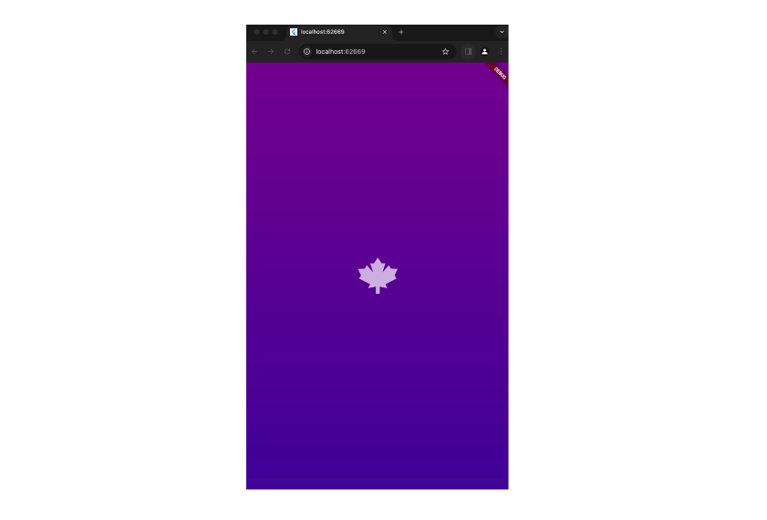
Yes, we're cooking! We'll be adding more icons later, so now you know how to implement them. We'll focus for a bit on the plumbing of the application that provide the core functionality.
Add required enums
We will start by creating a Dart enumeration that represents the temperature conversion options (Celsius and Fahrenheit); we'll make it as an enhanced enum so we can tack on more functionality to it.
Anywhere at the bottom of the file, add the following:
enum GeminiTempOptions {
fahrenheit2celsius('°F'),
celsius2fahrenheit('°C');
final String label;
const GeminiTempOptions(this.label);
}
Notice this is more than a regular enum - this one is used more like a struct or an object that packs on additional functionality besides the enumeration values. Pretty handy!
Add a GeminiRequest and GeminiResponse classes
In order to make things more organized and create some sort of an API around the requests we'll be making to Gemini, I like to create PODO (Plain Ol' Dart Object) model classes that represent the actions to be made inside the application and encapsulate the user's intent.
We want to request from Gemini that it converts a temperature from Celsius to Fahrenheit and viceversa, given a temp value, so that's exactly what we'll create.
Anywhere in the main.dart file (at the bottom, preferably), add the following class:
class GeminiTempRequest {
final GeminiTempOptions conversion;
final double temp;
GeminiTempRequest({
required this.conversion,
required this.temp
});
String toJson() {
return json.encoder.convert({
'conversion': conversion.name,
'temp': temp,
});
}
}
This class called GeminiTempRequest encapsulates the request made by the user to Gemini, and even exposes a method to convert its data to a JSON (in case we want to send this to an API that uses Gemini behind the scenes).
Proceed now to create another PODO class called GeminiTempResponse which does the opposite - captures the response from Gemini and encapsulates it into a neat model, confirming what the conversion was (conversion property), what the input value was (inputValue property) and what the result of the conversion was (outputValue property). It also exposes a fromJSON factory constructor to map the payload into a GeminiTempResponse instance, for further consumption in my app.
I'm adding an additional static utility method called empty for when I want just an empty instance of this PODO class, for initialization / resetting purposes.
Anywhere in the main.dart file, perhaps below the GeminiTempRequest class, add the following class:
class GeminiTempResponse {
final GeminiTempOptions conversion;
final double inputValue;
final double outputValue;
const GeminiTempResponse({
required this.inputValue,
required this.outputValue,
required this.conversion,
});
factory GeminiTempResponse.fromJSON(Map<String, dynamic> json) {
return GeminiTempResponse(
inputValue: json['inputValue'],
outputValue: json['outputValue'],
conversion: GeminiTempOptions.values.firstWhere((c) => c.name == json['conversion']),
);
}
static GeminiTempResponse empty() {
return const GeminiTempResponse(conversion: GeminiTempOptions.celsius2fahrenheit, inputValue: 0, outputValue: 0);
}
}
Add the required state management providers
For this appplication to work, we need to add entities that allow communication between widgets, maintain state throughout our app and broadcast when changes occur so that our UI comes to life and displays the correct information at all times upon state changes.
Providers of type Provider are the simplest type of providers in Riverpod, and they simply wrap an instance of a given entity to be fed to the application.
Providers of StateProvider wrap a value and notify of its changes to any subscribed listeners.
Add the following providers to the main.dart file at the bottom:
// providers
final tempFieldController = Provider((ref) {
return TextEditingController();
});
final tempDisplayValueProvider = StateProvider<double>((ref) {
return 0;
});
final tempInputValueProvider = StateProvider<String>((ref) {
return '';
});
final tempRetrievalFlagProvider = StateProvider<bool>((ref) {
return false;
});
final tempConversionOptionProvider = StateProvider<GeminiTempOptions>((ref) => GeminiTempOptions.celsius2fahrenheit);
final tempInverseConversionProvider = Provider((ref) {
final selectedConversion = ref.watch(tempConversionOptionProvider);
return selectedConversion == GeminiTempOptions.celsius2fahrenheit ? GeminiTempOptions.fahrenheit2celsius : GeminiTempOptions.celsius2fahrenheit;
});
Let's break it down for a second:
- tempFieldController provides an instance of type TextEditingController which will be hooked up to an text input field in the GeminiTempInput widget - later in this codelab
- tempDisplayValueProvider provides a double value to show the converted value
- tempInputValueProvider captures the input from the text input field as a String, which later gets converted
- tempRetrievalFlagProvider encapsulates a boolean flag to illustrate whether a value is being fetched from Gemini
- tempInverseConversionProvider listens to another Provider instance (tempConversionOptionProvider) and based on the broadcasted value, returns the proper temp scale. This is one of the advantages of providers of type Provider that they can "watch" or listen to other providers for their values if they choose to depend on it for further processing.
With all of this in place, let's proceed to create the entity that will handle the functionality and binds things together and hooks up the action of fetching the temperature to the user interface. Let's devote a whole step for this as this is a crucial step. See you on the next step!
We'll be using the MVVM pattern to create a clean separation between the UI and the models that provide the data. We'll create a class called GeminiTempLocalRetrievalViewModel, which will encapsulate the following functionality:
- conversion of a temperature from the desired temp scale to another and viceversa
- resetting the values and fields in the UI to allow other temperatures to be converted
- handling the toggle between one temp scale to the other
Create the following class, that inherits from StateNotifier of type boolean, which represents whether the operation was successful or not. StateNotifier is a type of class available in Riverpod that denotes that this class will broadcast state updates so the UI rebuilds itself accordingly upon state changes (the boolean state whether the operation was successful or not):
class GeminiTempLocalRetrievalViewModel extends StateNotifier<bool> {
final Ref ref;
GeminiTempLocalRetrievalViewModel(this.ref, super._state);
}
Inside of this class, create a method called convertTemp, which will encapsulate the following functionality:
- read the temperature provided by the user
- capture the desired conversion
- assemble the request
- generate the prompt and assemble it with the user-provided values and send it to Gemini, provided the API_KEY value (make sure to add your own key!)
- capture the response from Gemini
- map the response from Gemini into a GeminiTempResponse for app consumption
- notify the UI that the value is ready to consume
Add the following piece of code inside the viewmodel class:
DO NOT FORGET TO REPLACE THE API_KEY WITH YOUR OWN!
// inside our viewmodel class...
Future<void> convertTemp() async {
state = true;
var tempValue = ref.read(tempInputValueProvider);
var selectedConversion = ref.read(tempConversionOptionProvider);
var fromToConversion = selectedConversion.name.split('2');
var fromValue = fromToConversion[0];
var toValue = fromToConversion[1];
final req = GeminiTempRequest(
conversion: selectedConversion,
temp: double.parse(tempValue),
);
var prompt = '''generate a JSON payload that returns the conversion of
weather from farenheit to celsius and viceversa; return a JSON
payload containing the following properties -
conversion: which is the value of the conversion, in this case it should read
"${req.conversion.name}" depending on the conversion;
inputValue, which is the value of ${req.temp} to convert from $fromValue;
outputValue, which is the result from the conversion to $toValue.
Do not return code, just the resulting JSON payload.
Do not return the word JSON in the payload''';
try {
final content = [Content.text(prompt)];
final model = GenerativeModel(
model: 'gemini-pro',
apiKey: '<ADD-API-KEY>'
);
final response = await model.generateContent(content);
var jsonResponse = json.decode(response.text!);
var geminiResponse = GeminiTempResponse.fromJSON(jsonResponse);
ref.read(tempDisplayValueProvider.notifier).state = geminiResponse.outputValue;
} on Exception {
ref.read(tempDisplayValueProvider.notifier).state = 0;
}
state = false;
}
Let's dissect the prompting aspect of this piece of code. Providing the correct prompt to Gemini is key to obtaining the desired output from it. Here we are asking Gemini to "generate a JSON payload" as output. We are also using variable interpolation to replace the key aspects of this prompt, which makes this prompt highly dynamic. We emphasize on things such as "Do not return code, just the payload" and "Do not return the word JSON in the payload" as in certain occasions, the model returns garbage that impedes us from parsing the response appropriately.
Then, we call the method model.generateContent passing the assembled prompt, and expect some text content, which we immediately run it through the json.decode utility method to parse it as a JSON.
Finally, we convert the JSON mapping into a GeminiTempReponse instance using the provided fromJSON factory constructor, and update our tempDisplayValueProvider provider instance, which after being mutated, notifies the UI to rebuild itself with the corresponding value.
Add the ability to reset values
Inside our viewmodel class, add a method called resetValues to reset the values back to default to allow the user to input another temp to be converted, as such:
void resetValues() {
ref.read(tempFieldController).clear();
ref.read(tempInputValueProvider.notifier).state = '';
ref.read(tempDisplayValueProvider.notifier).state = 0;
}
Notice how we, using the injected ref reference from Riverpod, we locate the corresponding providers, and perform operations against them.
Add the ability to capture the desired temp conversions
Add one more method to capture the selection from the user of the conversion they want to perform. This will be consumed by a widget later that collects this value from the user. Add it for now:
void onSelectConversion(GeminiTempOptions tempOption) {
resetValues();
ref.read(tempConversionOptionProvider.notifier).state = tempOption;
}
Adding a StateNotifierProvider
Now, in order to make this viewmodel class discoverable and consumable by widgets in our application, we must wrap it inside a corresponding provider - in this case, a StateNotifierProvider type of provider. This allows for the UI to watch changes in its state and rebuilding accordingly.
Add this additional provider along with the other providers added earlier:
// below the other providers, so they're all together
final geminiRetrievalLocalVMProvider =
StateNotifierProvider<GeminiTempLocalRetrievalViewModel, bool>((ref) {
return GeminiTempLocalRetrievalViewModel(ref, false);
});
Notice how we inject a Ref reference, which is the entity that allows this viewmodel to fetch other providers and communicate with them in a decoupled fashion.
I think we're pretty much all set on core functionality and logic. Now let's proceed to create the corresponding UI that will hook up to these. Let's go to the next step.
For displaying the temperature, we'll create a custom widget called GeminiTempDisplay, which will encapsulate the converted temperature value.
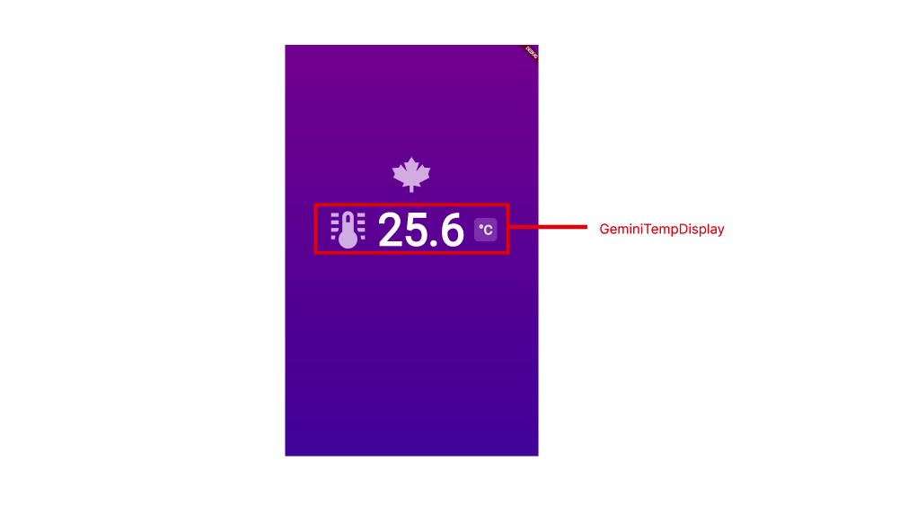
As before, let's create first the placeholder widget as part of our Column widgets.
Right under the Icon we created earlier, add the following line:
// under the Icon above...
const GeminiTempDisplay(),
The GeminiTempDisplay widget will be a custom widget that will handle the display of the temperature as such:
- an icon representing a thermometer
- a Consumer widget that changes its inner structure from a CircularProgressIndicator when the value of the geminiRetrievalLocalVMProvider changes state, to a Text widget once the value is available
- a Consumer widget that watches for changes occurring in the tempInverseConversionProvider provider so it renders accordingly, displaying the correct label depending on the selected conversion.
The code for the GemminiTempDisplay widget is below; copy and paste it anywhere in the main.dart file, anywhere below the GeminiTempMain widget, as such:
// rest of the code omitted for brevity
class GeminiTempDisplay extends StatelessWidget {
const GeminiTempDisplay({super.key});
@override
Widget build(BuildContext context) {
return Row(
mainAxisAlignment: MainAxisAlignment.center,
children: [
// icon
Icon(
CommunityMaterialIcons.thermometer_lines,
size: 100,
color: Colors.white.withOpacity(0.75)
),
// spacing
const SizedBox(width: 16),
// consume the temp value
Consumer(
builder: (context, ref, child) {
// watch on the result of the viewmodel's operation
final dataRetrieved = ref.watch(geminiRetrievalLocalVMProvider);
// watch on the temp value to be displayed
final tempValue = ref.watch(tempDisplayValueProvider);
// show a progress indicator if data is being retrieved...
if (dataRetrieved) {
return Container(
alignment: Alignment.center,
constraints: const BoxConstraints(
minHeight: 150,
minWidth: 150,
),
child: const SizedBox(
width: 50,
height: 50,
child: CircularProgressIndicator(
valueColor: AlwaysStoppedAnimation(Colors.white),
),
),
);
}
// otherwise show whatever value is available, formatted appropriately
return Text(tempValue.toStringAsFixed(1), style: const TextStyle(
color: Colors.white,
fontSize: 100,
fontWeight: FontWeight.bold,
));
}
),
// more spacing
const SizedBox(width: 20),
// consume the selected conversion value
Container(
decoration: BoxDecoration(
color: Colors.white.withOpacity(0.25),
borderRadius: BorderRadius.circular(10)
),
padding: const EdgeInsets.symmetric(
horizontal: 10, vertical: 5,
),
child: Consumer(
builder: (context, ref, child) {
return Text(ref.watch(tempInverseConversionProvider).label,
style: const TextStyle(
fontWeight: FontWeight.bold,
color: Colors.white,
fontSize: 30
)
);
},
),
)
],
);
}
}
NOTE:
Consumer widgets are widgets available in Riverpod and are very useful whenever you want only a portion of your widget tree to rebuild, and not everything inside the parent widget's build method, thus making updates to the UI more efficient and performant.
Let's get back to our GeminiTempMain's Column widget, and right under the GeminiTempDisplay widget, add some spacing, to give it some breathing room, as such:
// rest of the code omitted;
// const GeminiTempDisplay() <- do not add this, just as a marker
const SizedBox(height: 24),
Give it a run and confirm that you can see the following output, proof that things are connected:
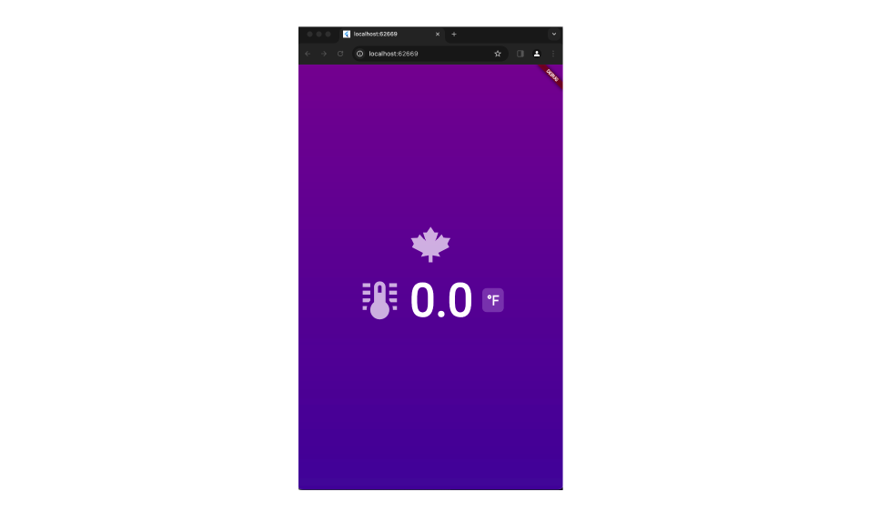
Looking nice - proceed to the next step when ready!
And we'll continue with our widget composition approach of splitting UI functionality into its discrete regions. This time we'll tackle the GeminiTempInput widget, but some of the functionality inside will be extracted into a separate widget called GeminiTempSelector, making things better distributed and encapsulated.
Let's proceed!
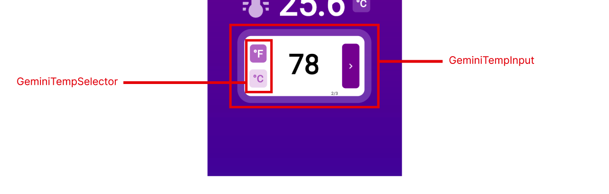
Back into our GeminiTempMain's Column widget, add another widget placeholder widget called GeminiTempInput - this will encapsulate the user's ability to input their desired temp, select the temp conversion and send the request to Gemini. Add this as the last widget inside the column:
// rest of the code omitted;
// last widget in the column, below the spacing SizedBox
const GeminiTempInput(),
Let's go ahead and add the code for the GeminiTempInput which comprises the following structure:
- a Container widget with some decoration to add border, border radius, padding, etc.
- as its inmediate child, a Row widget laying out its children horizontally, consisting of:
- The GeminiTempSelector widget (will be added later down this lab)
- an Expanded widget wrapping a TextFormField widget for receiving input from the user in the form of only digits (thanks to the FilteringTextInputFormatter.digitsOnly input formatter); some special decoration with a max length of 3 characters, and the ability to handle whenever the user provides input via its onChanged event, to subsequently update the tempInputValueProvider provider and capture the user's input.
- a custom button made up of a Container widget, wrapped inside a GestureDetector and a MouseRegion so it detects the cursor on the web.
Notice how we trigger the workflow by checking the custom button's onTap event:
- we watch on the tempInputValueProvider value to check whether is empty or not so we can enable / disable the button accordingly
- then we call the method convertTemp off of the geminiRetrievalLocalVMProvider viewmodel in order to trigger the workflow, otherwise return null to disable its functionality
Grab the code below and bring it into the main.dart:
class GeminiTempInput extends ConsumerWidget {
const GeminiTempInput({super.key});
@override
Widget build(BuildContext context, WidgetRef ref) {
return Container(
width: 350,
padding: const EdgeInsets.symmetric(
horizontal: 15,
),
decoration: BoxDecoration(
color: Colors.white,
borderRadius: BorderRadius.circular(20),
border: Border.all(
width: 20,
color: Colors.white.withOpacity(0.25),
strokeAlign: BorderSide.strokeAlignOutside
)
),
child: Row(
mainAxisAlignment: MainAxisAlignment.center,
children: [
// <= ADD THE GEMINI_TEMP_SELECTOR HERE ONCE CREATED
// receive user's input
Expanded(
child: TextFormField(
controller: ref.read(tempFieldController),
style: const TextStyle(fontWeight: FontWeight.bold,fontSize: 80, color: Colors.black),
inputFormatters: [FilteringTextInputFormatter.digitsOnly],
decoration: const InputDecoration(
border: OutlineInputBorder(
borderSide: BorderSide.none
),
hintText: '- -',
hintStyle: TextStyle(color: Colors.grey),
hintMaxLines: null,
),
maxLength: 3,
textAlign: TextAlign.center,
onChanged: (value) {
ref.read(tempInputValueProvider.notifier).state = value;
},
),
),
// custom styled button to trigger the workflow
MouseRegion(
cursor: SystemMouseCursors.click,
child: GestureDetector(
onTap: ref.watch(tempInputValueProvider).isNotEmpty ? () {
ref.read(geminiRetrievalLocalVMProvider.notifier).convertTemp();
} : null,
child: Container(
height: 130,
decoration: BoxDecoration(
color: ref.watch(tempInputValueProvider).isNotEmpty ? Colors.purple : Colors.grey.withOpacity(0.5),
borderRadius: BorderRadius.circular(10)
),
padding: const EdgeInsets.symmetric(
horizontal: 10, vertical: 5,
),
child: const Icon(Icons.chevron_right,
color: Colors.white,
size: 30)
),
),
),
],
)
);
}
}
Save your work and rebuild the app. Take it for a spin, with the caveat that you can only convert temperatures from Celsius to Fahrenheit as it is the default value, and we cannot switch at the moment.
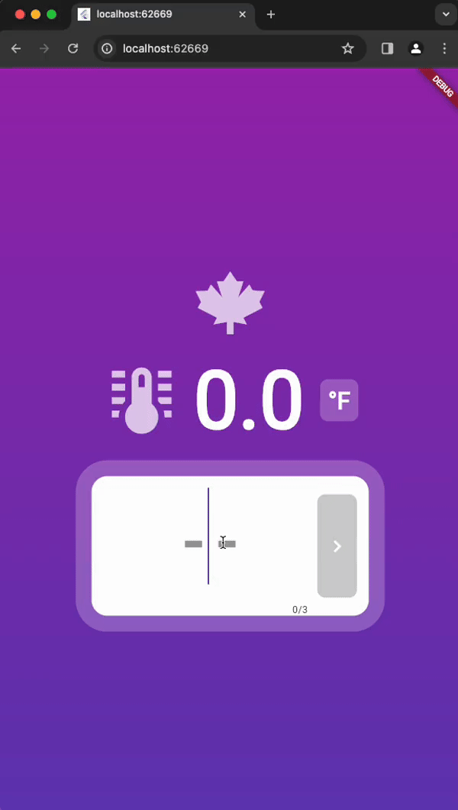
Sweet! Things are looking snazzy! Now let's wrap things up by adding the ability to switch to the desired conversion.
Add the GeminiTempSelector
Let's go back up to our GeminiTempInput widget and find the placeholder line that says "ADD THE GEMINI_TEMP_SELECTOR HERE ONCE CREATED", and replace it by our placeholder widget name called GeminiTempSelector, as such:
// rest of the code omitted;
// replace line by this:
const GeminiTempSelector(),
This widget is composed as follows:
- a ConsumerWidget since we want to watch for the selected conversion option and rebuild accordingly, thanks to the tempConversionOptionProvider provider
- a Column widget with two custom buttons based on the values of the GeminiTempOptions enumeration; we build them programmatically by looping through the enum values and creating a custom button out of a styled Container, wrapped inside a GestureDetector wrapped in turn by a MouseRegion widget.
- Depending on the currently selected GeminiTempOptions enum value, we will display the corresponding button as selected or unselected, to illustrate the current conversion operation being performed.
Add this code in your main.dart file:
class GeminiTempSelector extends ConsumerWidget {
const GeminiTempSelector({super.key});
@override
Widget build(BuildContext context, WidgetRef ref) {
final conversion = ref.watch(tempConversionOptionProvider);
// color configuration
final selectedColor = Colors.purple.withOpacity(0.5);
final unselectedColor = Colors.purple.withOpacity(0.125);
const selectedLabel = Colors.white;
final unselectedLabel = Colors.purple.withOpacity(0.5);
return Column(
children: List.generate(
GeminiTempOptions.values.length, (index) {
var tempOption = GeminiTempOptions.values[index];
return MouseRegion(
cursor: SystemMouseCursors.click,
child: GestureDetector(
onTap: () {
ref.read(geminiRetrievalLocalVMProvider.notifier).onSelectConversion(tempOption);
},
child: Container(
margin: EdgeInsets.only(bottom: index < GeminiTempOptions.values.length - 1 ? 20 : 0),
decoration: BoxDecoration(
color: conversion == tempOption ? selectedColor : unselectedColor,
borderRadius: BorderRadius.circular(10)
),
padding: const EdgeInsets.symmetric(
horizontal: 10, vertical: 5,
),
child: Text(tempOption.label, style: TextStyle(
fontWeight: FontWeight.bold,
color: conversion == tempOption ? selectedLabel : unselectedLabel,
fontSize: 30)
),
),
),
);
}
),
);
}
}
With this in place, take it for one last spin and run through the following scenarios:
- try to input characters; you shouldn't be allowed
- add a value in Fahrenheit; notice the Celsius value above in the GeminiTempDisplay
- see the submit arrow button enabling as you input digits
- submit a value, notice the progress indicator
- after a second or two, see the converted value above
- toggle the conversion options from Celsius and Fahrenheit and viceversa; notice toggling correctly
- run this scenario between several conversions
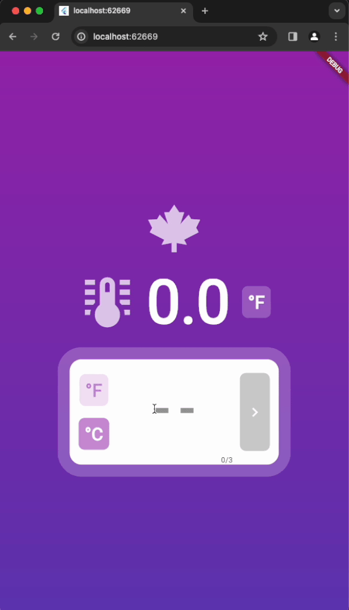
App is looking really good, and fully functional! Love how we can leverage the power of Gemini to build apps where Gemini provides us with the data we need - all we need is prompt it for it, and voilá!
If you made all the way to this step, congrats on getting to this point. Hope you learned a thing or two about Flutter and how to supercharge your Flutter web apps with the power of AI!
In this codelab, we accomplished the following:
- Created a Flutter Web App
- Set up the State Management foundation for it
- Implemented Riverpod as our web app's default state management strategy
- Use the StateProvider, StateNotifierProvider, ConsumerWidget and Consumer from Riverpod
- Implemented the MVVM pattern to create a clean separation of concerns
- Implemented Gemini via the Google AI Dart SDK to serve as a backend that produces valid, consumable JSON for our app
- Had fun along the way building cool UIs in Flutter!!!!!
ADDITIONAL NOTES:
Try not to keep your Gemini API key hard-coded in your project when making this project publicly available. You should follow best practices when storing your API keys. Here's a great article on how to do so by Andrea Bizzotto on storing API keys in Flutter.
Please don't forget to follow me on social media:
- On Twitter (@drcoderz)
- On YouTube (Roman Just Codes)
- On my Personal Portfolio
- On Medium
- On LinkedIn
Here's the full code for this lab (available as a public Gist), in case you fell behind or couldn't get yours to work for some reason. Enjoy!